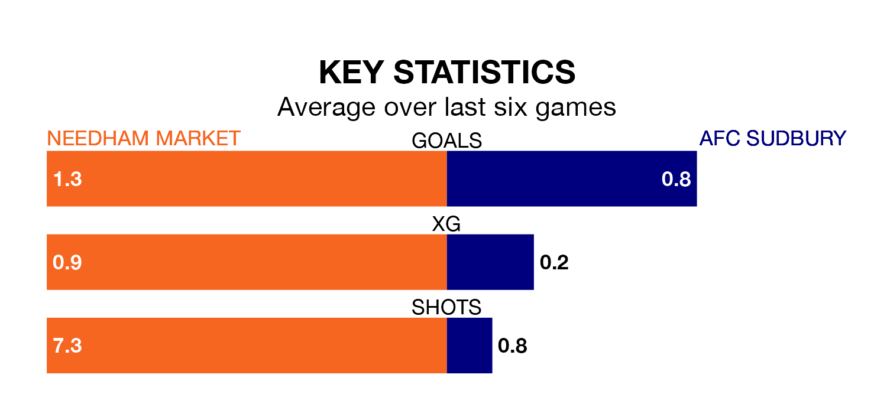

Relegation candidates AFC Sudbury face a challenge away against high-flying Needham Market at Bloomfields on Monday.
AFC Sudbury are 19th in the Southern League Premier – Central table, and have picked up nine wins and 10 draws in their 37 games to date.
Needham Market, meanwhile, are top of the standings with 79 points, having won 24 and drawn seven of their first 36 matches.
With 68 goals in 36 games so far this season, Needham Market are scoring more than average in the league with 1.9 goals per game. And they are conceding fewer than average, letting in 27 goals at a rate of 0.8 per game.
Sudbury, meanwhile, are below average scorers, with 1.3 goals per game, compared to a league average of 1.5. They have conceded 1.5 goals per game.
The hosts are in reasonable form in the Southern League Premier Central, with three wins and two draws from their last six games.
With two wins and a draw over that period, the away side's form is worse – they have taken seven points from 18, compared to Needham Market's 11.
Needham Market's last match was on Friday, a 2-0 win against Hitchin Town.
Sudbury lost 4-2 against St Ives Town last time out, on Saturday.
Updated: 10:31 (UTC), 31/03/24